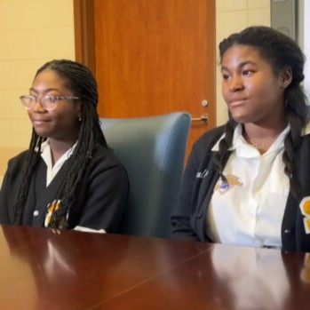

There are so many stories of women in STEM to be shared. Here are some examples:
 In March 2023, Calcea Johnson and Ne'Kiya Jackson, two high school students from New Orleans, found a theory to prove the Pythagorean Theorem through trigonometry.
In 1942, Hedy Lamarr created the technology that would later be used for today’s WiFi. We have her to thank for all of the current conveniences we have!
Arfa Abdul Karim Randhawa was known as a computer prodigy. She was the youngest Microsoft Certified Professional in 2004 and met Bill Gates.
Fill in the information below to share how a woman leads STEM and share the story on social media using #GirlsLeadSTEM!